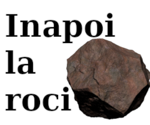

Andezilt
Andezitul (sau Islanditul) este o rocă magmatică rezultată prin erupție vulcanică, având o granulație fină, de culoare brună, violetă, până la cenușie. În compoziția chimică a rocii predomină dioxid de siliciu (ca. 60 %).
